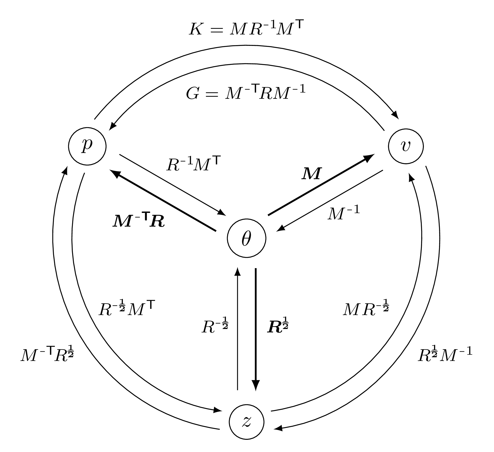

Linear models - general case
We recall the notations of our introduction to shape registration: \(\theta\) denotes the vector of P parameters of a deformation model that maps a source shape \(A\) to a deformed shape \(\text{Model}(\,\theta\,;\,A\,)=A_{\theta}\). Any such deformation is associated to a regularization penalty \(\text{Regularization}(\theta)\).
This page describes “linear” deformation models that satisfy the following properties:
Linearity – the deformation model is linear in the parameters \(\theta\). If \(X\sim A\) and \(X_\theta\sim{}A_\theta\) denote the vectors of features of length F that represent the source and deformed shapes, then there exists a F-by-P matrix \(M\) such that:
\[X_{\theta} ~=~ X + M \theta~.\]
Usually, \(X\) is a collection of \(xyz\) coordinates and F is equal to three times the number of vertices in the source shape \(A\).
Quadratic regularization – the regularization term is quadratic in the parameters \(\theta\). There exists a positive (semi-)definite P-by-P matrix \(R\) such that:
\[\text{Regularization}(\theta) ~=~ \tfrac{1}{2}\| \theta \|^2_{R} ~=~ \tfrac{1}{2} \t{\theta} \T R \theta~.\]
This means that the rest pose is associated to the zero vector of parameters \(\widehat{\theta}=0\).
Parameters
Assuming that there are no additional constraints and that both \(M\) and \(R\) are invertible, we can summarize these relationships in the following diagram:


Links between the four variables that can be used to describe a linear deformation model: the vector of parameters \(\theta\), the momentum \(p\), the displacement \(v\) and the latent code \(z\).
We highlight with a bold font the three linear transformations that let us turn the internal parameter vector \(\theta\) into the three standard representations: